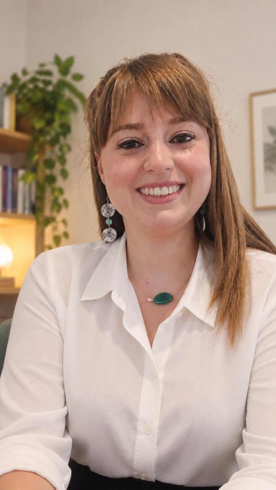

Σχετικά με εμένα
Είμαι η Ιωάννα Τσάτη, Ψυχολόγος με άδεια άσκησης επαγγέλματος και πτυχιούχος Ψυχολογίας του University of Essex.
Γεννήθηκα και μεγάλωσα στην Πάτρα, όπου ξεκίνησα την ακαδημαϊκή μου πορεία στο Πανεπιστήμιο Πατρών, αποκτώντας πτυχίο Φιλολογίας και Παιδαγωγική Επάρκεια.
Το ενδιαφέρον μου για την ανθρώπινη συμπεριφορά, τη συναισθηματική λειτουργία και τους παράγοντες που επηρεάζουν τις σκέψεις, τις επιλογές και τις διαπροσωπικές μας σχέσεις με οδήγησε στην επιστήμη της Ψυχολογίας. Στη συνέχεια, ολοκλήρωσα τις σπουδές μου στην Ψυχολογία στο University of Essex, σε συνεργασία με το Aegean College, αποκτώντας πτυχίο BSc (Hons) Psychology Science.
Στο πλαίσιο της συνεχούς επιστημονικής μου κατάρτισης, παρακολουθώ μεταπτυχιακό πρόγραμμα στην Κλινική Ψυχολογία (MSc Clinical Psychology) του University of Essex, σε συνεργασία με το Aegean College, με στόχο την περαιτέρω εμβάθυνση των γνώσεών μου στην κατανόηση και αξιολόγηση της ψυχικής λειτουργίας.
Η ακαδημαϊκή μου πορεία
Η ακαδημαϊκή μου διαδρομή στη Φιλολογία, την Παιδαγωγική και την Ψυχολογία έχει συμβάλει στη διαμόρφωση μιας ευρύτερης οπτικής για τον άνθρωπο, την επικοινωνία και τις διαφορετικές ανάγκες που αναδύονται στα διάφορα στάδια της ζωής.
- BScΠτυχίο Ψυχολογίας — BSc (Hons) Psychology ScienceUniversity of Essex, σε συνεργασία με το Aegean College
- MScΜεταπτυχιακό Πρόγραμμα Κλινικής Ψυχολογίας — MSc Clinical PsychologyUniversity of Essex, σε συνεργασία με το Aegean CollegeΣε εξέλιξη
- ΠτυχίοΠτυχίο Φιλολογίας & Παιδαγωγική ΕπάρκειαΠανεπιστήμιο Πατρών
- ΆδειαΆδεια Άσκησης Επαγγέλματος ΨυχολόγουΠεριφέρεια Νοτίου Αιγαίου — Αρ. Πρωτ. 2262
- ΠρακτικήΠρακτική άσκηση 150 ωρώνΚέντρο Ημέρας για Άτομα με Άνοια «Φροντίζω», Πάτρα
Κέντρο Ημέρας για Άτομα με Άνοια «Φροντίζω»
Στο πλαίσιο των μεταπτυχιακών μου σπουδών στην Κλινική Ψυχολογία, πραγματοποίησα 150 ώρες πρακτικής άσκησης στο Κέντρο Ημέρας για Άτομα με Άνοια του σωματείου «Φροντίζω» στην Πάτρα, το οποίο παρέχει υπηρεσίες νοητικής ενδυνάμωσης και υποστήριξης σε άτομα με άνοια και στους φροντιστές τους.
Κατά τη διάρκεια της πρακτικής μου άσκησης, είχα την ευκαιρία να έρθω σε άμεση επαφή με τους ωφελούμενους του Κέντρου, να γνωρίσω τις ανάγκες και τις δυσκολίες που αντιμετωπίζουν και να παρακολουθήσω και να συμμετάσχω, υπό εποπτεία, σε προγράμματα νοητικής ενδυνάμωσης, συμβουλευτική υποστήριξη φροντιστών και διαδικασίες νευροψυχολογικής αξιολόγησης.
Κάθε άνθρωπος έχει τη δική του ιστορία
Πιστεύω ότι κάθε άνθρωπος έχει τη δική του ιστορία, τις δικές του εμπειρίες και έναν μοναδικό τρόπο να αντιλαμβάνεται και να βιώνει τον κόσμο γύρω του.
Στην προσέγγισή μου δίνω ιδιαίτερη σημασία στην ενσυναίσθηση, την ενεργητική ακρόαση και τον σεβασμό στην προσωπικότητα, τις ανάγκες και τον ρυθμό κάθε ανθρώπου.
Για μένα, η ψυχολογική υποστήριξη βασίζεται στην ουσιαστική επικοινωνία και στη δημιουργία μιας σχέσης εμπιστοσύνης, μέσα στην οποία το άτομο μπορεί να εκφράσει ελεύθερα τις σκέψεις και τα συναισθήματά του, χωρίς φόβο κριτικής.
Στόχος μου είναι η διαμόρφωση ενός ασφαλούς και υποστηρικτικού πλαισίου συνεργασίας, που ενθαρρύνει την αυτογνωσία, την κατανόηση των προσωπικών δυσκολιών και την αναζήτηση τρόπων αποτελεσματικότερης διαχείρισής τους.